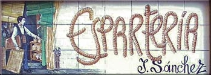

Sobre mí
Me llamo Paula, soy de Madrid pero he vivido en Dublín y París. Estudié cosas que no tienen nada que ver con la programación en una época en la que lo más digital que había era la Encarta pero hace mucho que me puede la curiosidad por el mundo del código
Mi Formación
- Full Stack Developer - Upgrade Hub
- Digital Product Manager - The Hero Camp
- Profesora ELE - Instituto Cervantes
- Historia del Arte - Universidad Complutense
Trabajos hechos
Dejo por aquí unas web hechas hace unos años
Bailar Madrid
Espartería Juan Sánchez

Contacto: Si quieres más información sobre el curso que estoy haciendo puedes visitar la web de Upgrade Hub